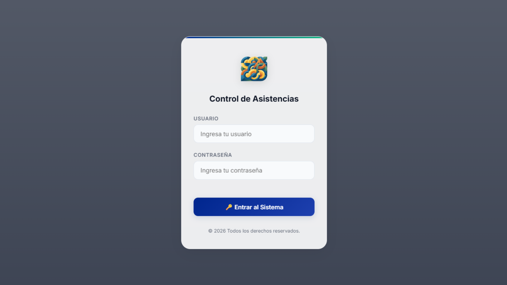

Web e Integración de Hardware
Sistema de Control de Asistencias con Reconocimiento Facial
Plataforma web desarrollada para una institución educativa con el objetivo de sustituir el sistema de asistencia por huella dactilar por uno de reconocimiento facial, integrando el hardware y software de hikVision. Permite gestionar empleados, turnos, marcaciones, cálculo automático de horas extra y generación de reportes exportables en Excel.
Rol: Desarrollo full stack completo (base de datos, backend, integración con hardware, frontend). Desarrollado junto a una compañera.
Python
HTML
CSS
PowerShell
SQLite

1 / 8
Sistema de Asistencias - Login